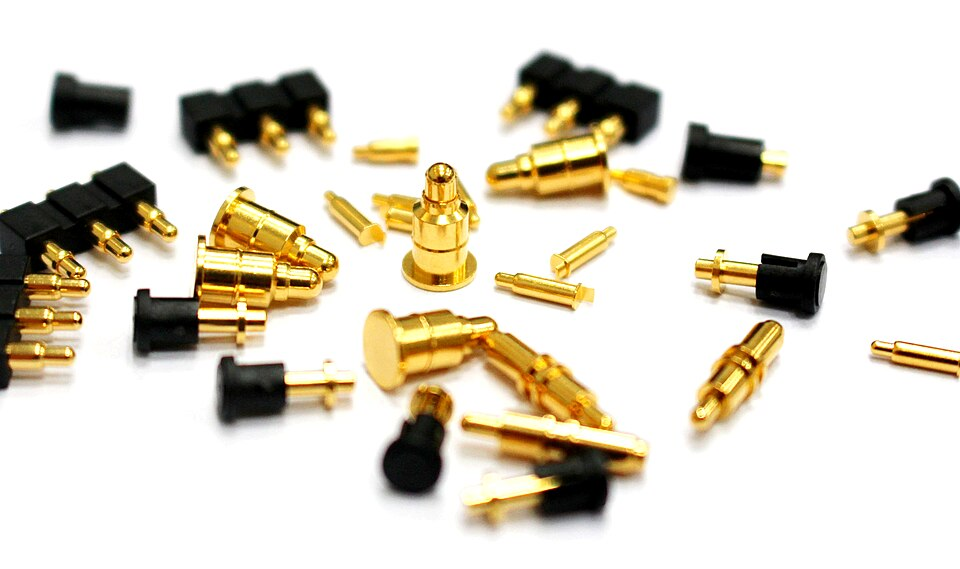
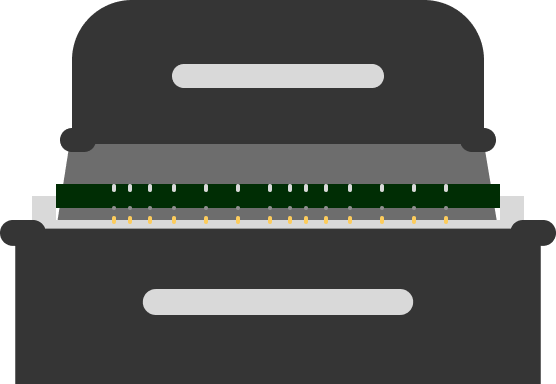

Build a repeatable board test fixture
Test a known-good board, two known faults and the good board again. Learn how to tell a board failure from a bad contact in the test fixture.
Make passing through the fixture repeatable
Test the simple 5 V LED circuit from P48. A breadboard, taped base and clipped wires are enough for a first fixture. Use a locator that puts the board in the same position and blocks the reversed orientation. Label the connection points for 5V_IN, ground and LED_A. When you move to spring probes, match them to the board pads, support the board and keep the insulator between probes intact.

Photo by Jole222, scaled for the course. Original photo · CC BY-SA 4.0.


Photo by Hotelsierra1, scaled for the course. Original photo · CC BY-SA 3.0.

Watch on YouTube · Find the position of the device under test and where the tester meets its pads. Adafruit’s QT Py production tester demonstration.
Adafruit’s pictured fixture build · SparkFun assembly inspection and testing.
Prove the tester before trusting the verdict
- Keep power off while inserting the board. Inspect LED orientation and use continuity to check the fixture connections against your drawing. Check for a supply short before applying power.
- Use a modestly current-limited 5 V bench supply. Measure IN and LED_A against ground, and measure directly across the 330 Ω resistor. With 5 V in and about 2 V at the anode, expect about 9 mA through the resistor. For the reference LED and part tolerances you select, write an acceptance band before running the unknown unit. The worksheet uses 7–11 mA and a visibly lit LED.
- Reseat the known-good board three times and keep all three readings. A change after reseating can indicate a contact problem. Verify fixture ground and other probe paths before diagnosing the board.
- With power off, introduce an open connection between R1 and the LED on a separate breadboard. Prove that the powered check catches it. On another board compare a reversed LED to the assembly drawing during unpowered inspection. Restore the reference board and reproduce the original pass.

Illustration by Mansan321. Original diagram · CC BY-SA 4.0.

Record the failure and repeat the same test after repair
Keep unit ID, board and fixture revisions, measured voltages and calculated resistor current. The CSV includes a known-good reference, a downstream open and an orientation failure detected before power. Add separate trial rows for each reseat and retest.
Download the board test worksheet.
A useful test record leaves a second technician able to reproduce a failure. Write which observation failed, how you separated board and fixture, and the measured results after the repair. If a known-good board fails intermittently, stop using that fixture for pass/fail decisions until the contact or procedure is fixed.
P48 · Design a board with accessible pads · C18 · Electronics test and repair jobs.